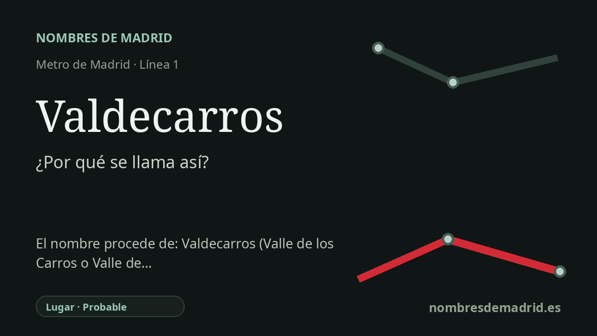

Publicado el · Investigación de Nombres de Madrid · Cómo verificamos cada origen · 9 fuentes consultadas
Respuesta rápida
La estación de Valdecarros toma su nombre del gran ámbito urbanístico de Valdecarros, junto al Ensanche de Vallecas. El sentido profundo probablemente es el compuesto transparente val de carros, 'valle de carros', aunque falta una prueba documental específica para el topónimo madrileño.
La historia del nombre
La estación de Valdecarros debe su nombre a un lugar: el ámbito urbanístico de Valdecarros, en el distrito de Villa de Vallecas. Cuando la línea 1 se prolongó hacia el sur desde Congosto, las tres nuevas estaciones fueron La Gavia, Las Suertes y Valdecarros; Valdecarros quedó como cabecera sur de la línea el 16 de mayo de 2007.
El nombre es anterior al metro. Los documentos urbanísticos de Madrid emplean Valdecarros para el enorme desarrollo del sureste situado junto al Ensanche de Vallecas, en relación con espacios como La Atalayuela, Mercamadrid, la M-50 y la futura ciudad del sureste. La estación, por tanto, no recuerda a una persona, sino a un topónimo local heredado y reutilizado para un nuevo barrio.
Como topónimo español, Valdecarros se lee de forma transparente: val significa 'valle' y carros alude a los carros. De ahí sale el sentido probable de 'valle de carros', un nombre rural compatible con el antiguo paisaje agrícola y caminero del borde de Vallecas. Esta lectura es lingüística, no una etimología archivística completamente demostrada para el lugar madrileño.
El nombre muestra también cómo el transporte puede fijar una geografía futura antes de que la ciudad esté terminada. Las crónicas de la apertura señalaban que las estaciones se inauguraron cuando buena parte de las viviendas del entorno aún no estaba finalizada, y que al principio solo uno de cada tres trenes continuaba hasta la nueva cabecera sur. El plano del metro hizo visible Valdecarros antes de que Valdecarros fuese un barrio plenamente construido.
La teoría detallada que relaciona Valdecarros con 'Valle de Navarros' y con un documento del 21 de abril de 1296 procede de fuentes sobre el municipio salmantino de Valdecarros, no de documentación madrileña. La interpretación mejor respaldada es que la estación toma su nombre del desarrollo madrileño de Valdecarros, cuyo topónimo probablemente significa 'valle de carros'.